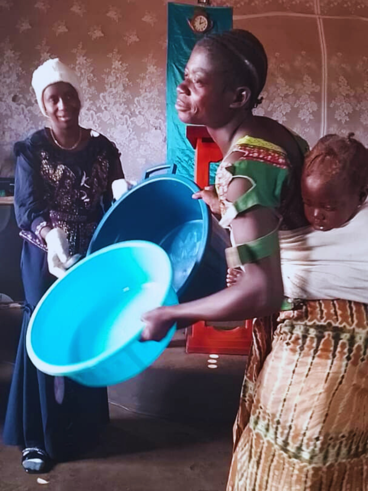
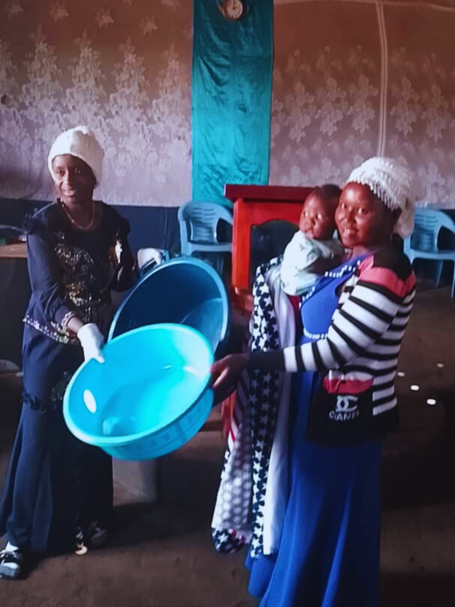
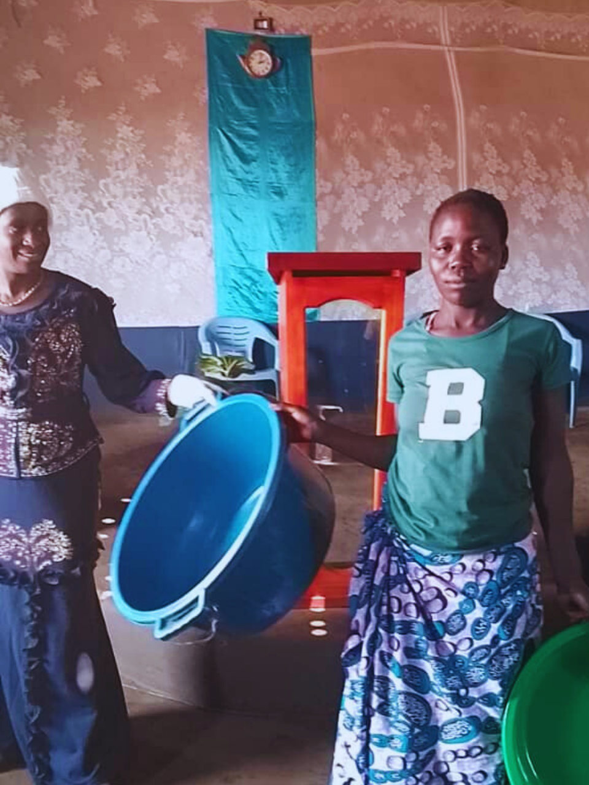
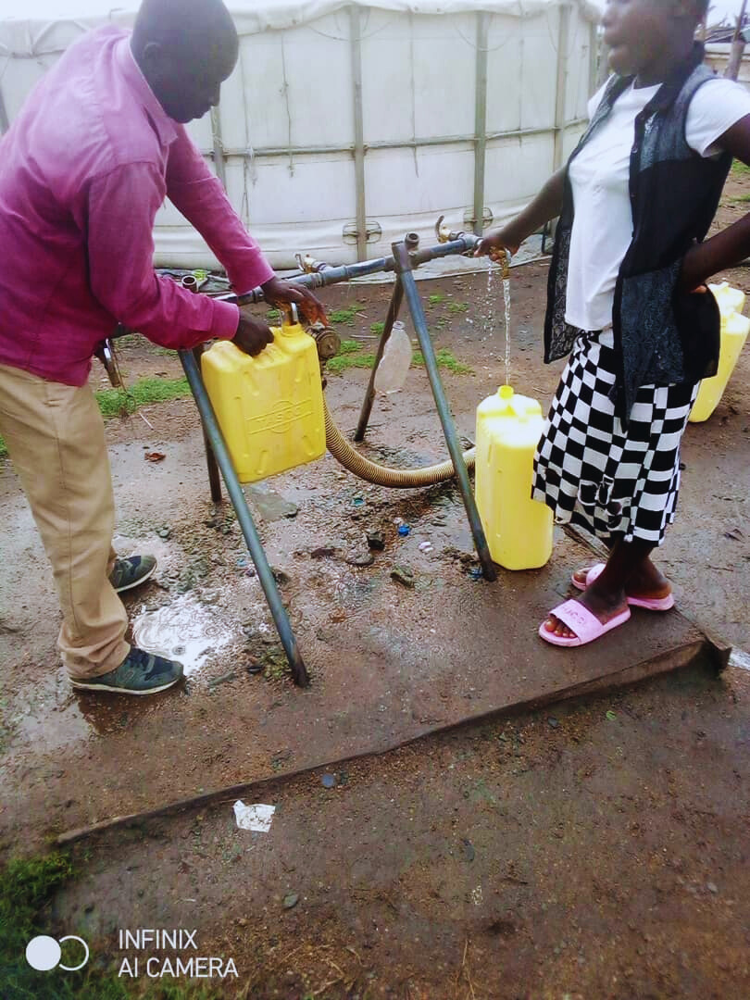

Empowering communities through resilience and recovery
Awareness campaigns on human rights, gender equality, and social integration. We aim to empower communities with knowledge and foster an inclusive environment.
Providing training to help communities respond effectively to emergencies. Our programs focus on equipping individuals with the skills needed to handle disaster situations.
Offering skills development and educational opportunities to enhance employability and self-sufficiency. Our training programs cover a range of vocational skills and educational topics.
Access to counseling services to aid trauma recovery and support mental well-being. We provide a safe space for individuals to address their mental health needs.
Training in sustainable agricultural practices and entrepreneurship to boost economic self-reliance. Our programs aim to foster economic growth and sustainability within communities.
SRI offers a wide range of services designed to foster resilience:
Counseling and mental health services to help individuals cope with adversity.
Support in navigating legal systems to protect the rights of vulnerable communities..
Facilitating access to quality medical care, including maternal health services.
Educational programs to improve skill sets and enhance job opportunities.
Support for infrastructure and social services development, such as building schools and health centers.
At Support Resilient Initiative (SRI), we are dedicated to fostering a more inclusive and resilient world. Our mission revolves around empowering communities and individuals, particularly refugees, to thrive despite their circumstances. Here’s why your support is invaluable:
By supporting SRI, you contribute to transformative programs that enhance the lives of vulnerable populations. Our initiatives in community sensitization, disaster preparedness, and mental health support play a crucial role in building stronger, more informed, and resilient communities.
Your support helps us advance human rights and gender equality through our awareness campaigns. We work tirelessly to promote social integration and ensure that every individual has access to the opportunities they deserve, regardless of their background.
We believe in the power of education and skills development as tools for lasting change. By contributing to our education and vocational training programs, you help provide individuals with the skills they need to build a better future for themselves and their communities.
Our economic empowerment programs focus on sustainable agricultural practices and entrepreneurship. Your support helps us equip individuals with the knowledge and resources to achieve economic self-reliance, ultimately fostering community growth and stability.
Mental health is a critical aspect of overall well-being. Your contributions enable us to provide essential counseling services and support for trauma recovery, ensuring that individuals receive the care and assistance they need to overcome mental health challenges.
Every donation and support makes a direct impact on the ground. From disaster response training to economic empowerment, your involvement helps us achieve measurable outcomes and create real change in the lives of those who need it most.
By supporting SRI, you become a part of a global movement towards a more equitable and compassionate world. Together, we can address the challenges faced by refugees and vulnerable communities, and work towards a future where everyone has the opportunity to thrive.
Your support is not just a donation; it’s an investment in hope, resilience, and a brighter future for countless individuals. Join us in making a difference today. Together, we can turn challenges into opportunities and build a world where every person has the chance to succeed.
Aisha Nansubuga, a mother of three from the rural village of Kiyindi, faced numerous challenges in providing for her family.
After joining SRI's vocational training program, Aisha learned essential skills in tailoring and small business management.
With the support and resources provided, she started her own tailoring business from home. Today, Aisha's business is thriving,
and she is not only able to support her family but also contribute to her community by providing employment opportunities. Her story is
a testament to the power of education and economic empowerment.
Joseph Tumwesigye, a young refugee from South Sudan, arrived in Uganda with hopes of finding a new beginning.
Through SRI’s education and skills development programs, Joseph received training in information technology and received
a scholarship to further his studies. His dedication and hard work led him to secure a position as a software developer with a
local company. Joseph’s success has inspired many in his community, and he is now actively involved in mentoring other young refugees,
sharing his knowledge and experience.
Sarah Nakabugo, a 28-year-old farmer from the outskirts of Kampala, struggled with severe health issues due to inadequate access to medical care.
SRI’s health outreach program provided her with essential medical support and health education. With proper treatment and guidance, Sarah’s health
significantly improved, allowing her to return to her farming activities. She now actively participates in SRI’s health awareness campaigns, helping
others in her community understand the importance of health and well-being.
Peter Byaruhanga, a smallholder farmer from Masaka, was facing difficulties with outdated farming techniques and limited resources.
SRI’s agricultural training and support program introduced him to modern farming practices and provided him with high-quality seeds and tools.
Peter’s yields have greatly improved, and he has expanded his farm to include new crops. His success has not only improved his livelihood but also
served as an inspiration for other local farmers, demonstrating the impact of sustainable agricultural practices.
Samuel Kirunda, a bright student from a disadvantaged background in Lira, was at risk of dropping out of school due to financial constraints.
Thanks to SRI’s scholarship program, Samuel was able to continue his education and excel in his studies. His academic achievements earned him a
place at a prestigious university, where he is now pursuing a degree in engineering. Samuel’s success story highlights the importance of education in
breaking the cycle of poverty and creating opportunities for the next generation.
Our mission is to ensure that the voices of resilient communities are heard, their rights are respected, and they have access to social services...
We aim to create a better future for both refugees and nationals through integration, peace-building, and strengthening livelihoods.
To ensure that the voices of resilient communities are heard, their rights are respected, and they have access to social services that foster long-term growth and recovery.
To have a better future through the empowerment and resilience of both displaced and local communities.
Focus on building emotional and mental resilience in communities affected by displacement or adversity, ensuring they have access to mental health resources and safe spaces that promote peace of mind.
Facilitate the integration of displaced individuals with local communities, fostering social cohesion, mutual respect, and collaboration, leading to long-term stability and resilience.
Empower communities through vocational training, economic support, and entrepreneurship opportunities that enable them to become self-sufficient and build stronger, more resilient livelihoods.
Work to eliminate gender-based violence by promoting gender equality, education, and awareness in both the displaced and host communities, ensuring safe environments for all.
Provide educational support, mentoring, and safe environments for children to grow and thrive, ensuring they are prepared to lead resilient lives in the face of adversity.
Advocate for the protection and well-being of communities in conflict or disaster-prone areas, focusing on long-term recovery and the resilience needed to rebuild in the face of instability.
Leads SRI with visionary guidance and strategic direction, ensuring our mission and goals are met.
Manages administrative functions and organizational records, ensuring smooth operations and adherence to policies.
Oversees our technological infrastructure, ensuring seamless IT operations and data security.
Facilitates global outreach and partnerships, expanding SRI’s influence and coordinating international projects.
Focuses on program growth, funding, and identifying new development opportunities.
Manages financial operations, ensuring efficient use of resources and compliance with regulations.
Advocates for gender equality and women’s empowerment, ensuring inclusive and supportive environments.
Empowering young people through education, vocational training, and leadership
development to build their resilience and future prospects.
Providing tailored support, accessibility improvements, and inclusive opportunities
to ensure disabled individuals can thrive and contribute to their communities .
Supporting farmers with modern agricultural techniques, resources, and market
access to enhance their productivity and resilience to environmental changes.
Offering business development support, mentorship, and funding to help
entrepreneurs build sustainable enterprises and economic resilience.
Assisting those affected by natural disasters with immediate relief, recovery
programs, and long-term resilience planning.
Ensuring that minority communities receive equitable access to resources, support,
and opportunities to promote social inclusion and resilience.
Assisting individuals reintegrating into society after incarceration with support
services, job training, and community integration efforts to enhance their resilience and
opportunities.
Addressing the needs of low-income families through financial assistance, education,
and skills development to improve their stability and resilience.
We help communities improve their livelihoods through agricultural and small business support.
We provide education and scholarships to the youth in vulnerable communities.
We deliver medical supplies and services to those in need, especially in refugee settlements.
Your donations help us provide much-needed services to vulnerable communities.
Donate NowLearn about the impact we’ve had on communities and the success stories of individuals who have benefited from our programs...
We provide women empowerment through several helps where necessary to women in Kyangwali district and ugnada atlarge.
  We support the refugee community through providing clean water source.
Welcome to Our Contact Page!
We’re thrilled that you’ve chosen to connect with the Support Resilient Initiative (SRI). Whether you
have questions, feedback, or want to learn more about our programs, we’re here to help. Our team is
committed to fostering resilience and building stronger communities, and we’d love to hear from
you.
Uganda
City:Kampala
District:Kwangwali
Tell:+256781619772
+256764551403